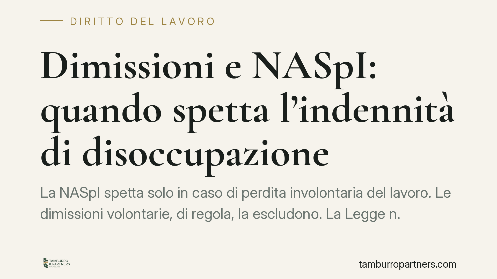

Dimissioni e NASpI: quando spetta l'indennità di disoccupazione
La NASpI spetta solo in caso di perdita involontaria del lavoro. Le dimissioni volontarie, di regola, la escludono. La Legge n. 203/2024 ha introdotto le dimissioni per fatti concludenti, ridisegnando i confini tra recesso del lavoratore e licenziamento disciplinare. Capire in quale categoria ricade la cessazione è decisivo per l'accesso al sostegno al reddito.

Il principio di fondo: involontarietà della perdita del lavoro
La NASpI (Nuova Assicurazione Sociale per l'Impiego), disciplinata dagli articoli 1 e seguenti del D.lgs. n. 22/2015, è una prestazione destinata a chi perde l'occupazione per causa a sé non imputabile. Da qui la regola generale: le dimissioni volontarie non danno diritto all'indennità, perché la cessazione dipende da una scelta del lavoratore.
Esistono però eccezioni consolidate. La NASpI spetta in caso di dimissioni per giusta causa e di risoluzione consensuale intervenuta nell'ambito della procedura di conciliazione presso l'Ispettorato del lavoro. In entrambi i casi la legge riconosce che la perdita del posto non è realmente frutto di una libera determinazione.
Il quadro normativo dopo la Legge 203/2024
La Legge n. 203/2024 (cosiddetto Collegato Lavoro) ha introdotto la figura delle dimissioni per fatti concludenti. La norma prevede che, in caso di assenza ingiustificata protratta oltre il termine fissato dal contratto collettivo applicabile, il rapporto si intenda risolto per volontà del lavoratore. In mancanza di previsione del CCNL, opera il termine legale.
> Nota di verifica: il numero e l'anno della circolare INPS di attuazione, così come il termine legale suppletivo di assenza, vanno riscontrati sul testo ufficiale prima di ogni utilizzo. La normativa rinvia in via primaria al termine del contratto collettivo; il termine di legge opera solo in via residuale. Si raccomanda il controllo diretto sul testo dell'articolo istitutivo della L. 203/2024 e sulla circolare INPS di prassi.
La conseguenza pratica è netta: se l'assenza ingiustificata fa scattare le dimissioni per fatti concludenti, la cessazione è equiparata a dimissioni volontarie e la NASpI non spetta.
Fatti concludenti o licenziamento disciplinare?
È qui che si concentrano i dubbi. Prima della riforma, l'assenza ingiustificata prolungata veniva gestita, di norma, come licenziamento disciplinare per giusta causa: un recesso del datore, quindi involontario per il lavoratore, che apriva l'accesso alla NASpI.
Con le dimissioni per fatti concludenti la stessa condotta può invece essere ricondotta a una manifestazione tacita di volontà del lavoratore di lasciare il posto, con esclusione dell'indennità. La distinzione non è formale: incide direttamente sul diritto al sostegno al reddito. Il datore che intenda comunque procedere con il licenziamento disciplinare deve attivare la procedura prevista dall'art. 7 dello Statuto dei lavoratori (contestazione, termine a difesa, provvedimento).
Come si prova la giusta causa (e perché l'INPS può dire no)
Nelle dimissioni per giusta causa l'onere della prova grava sul lavoratore. Non basta dichiarare una ragione grave: occorre dimostrarla. Rientrano tra le ipotesi tipicamente riconosciute il mancato pagamento reiterato della retribuzione, il demansionamento, le molestie, le modifiche peggiorative delle mansioni o della sede in violazione di legge.
L'INPS, in sede istruttoria, valuta la documentazione a sostegno: comunicazione di dimissioni con esplicita indicazione della causa, solleciti di pagamento, denunce, eventuali provvedimenti giudiziali o accordi. In assenza di riscontri, la domanda viene respinta e la cessazione trattata come dimissione volontaria. Il contenzioso tipico riguarda proprio l'adeguatezza della prova: gli orientamenti consolidati richiedono elementi oggettivi e non la sola affermazione del lavoratore. Per questo la motivazione delle dimissioni va formalizzata con cura fin dall'origine.
Il nodo delle dimissioni telematiche
Le dimissioni ordinarie richiedono la procedura telematica prevista dall'art. 26 del D.lgs. n. 151/2015: senza la comunicazione informatica, il recesso non è efficace. Le dimissioni per fatti concludenti costituiscono l'eccezione: proprio perché desunte dal comportamento e non da un atto volontario espresso, non passano dalla piattaforma telematica. Questo le rende più insidiose, perché il lavoratore può ritrovarsi "dimesso" senza aver compiuto alcun adempimento.
Cosa fare in concreto
- Formalizza sempre la motivazione. In caso di dimissioni per giusta causa, indica in modo esplicito e documentato la ragione grave che le fonda.
- Conserva le prove. Buste paga, solleciti, comunicazioni, denunce: sono decisive per superare l'istruttoria INPS.
- Non abbandonare il posto senza gestione. L'assenza ingiustificata può tradursi in dimissioni per fatti concludenti e nella perdita della NASpI.
- Verifica il termine del CCNL applicabile. È il riferimento primario per stabilire quando l'assenza fa scattare la risoluzione automatica.
- È opportuna una verifica preventiva dei presupposti prima di formalizzare la cessazione, per evitare qualificazioni che precludano l'accesso all'indennità.
---
*Contributo informativo a cura di Tamburro & Partners Avvocati - Avv. Giuseppe Tamburro. Non costituisce parere legale.*
Ogni storia di lavoro ha i suoi tempi.
Se gestisci HR e vuoi un confronto su contenzioso, ispezioni o licenziamenti, scrivi allo studio. Ti rispondiamo entro un giorno lavorativo.